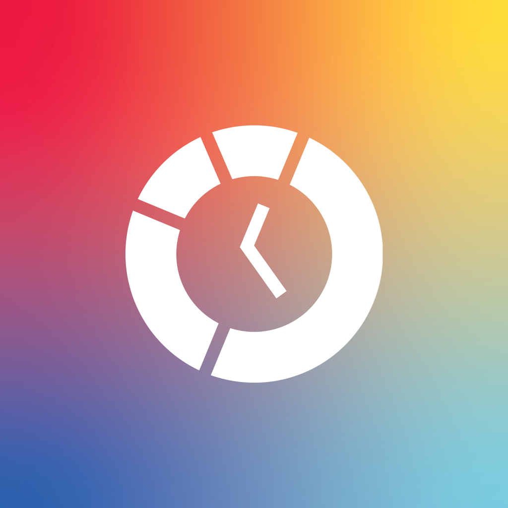

Eight slides: your six, plus Where it went after Hours and the full rank list after Friends, both kept from today’s story. The rank slide drops out when fewer than three friends are active.
Tap to move: right half advances, left half goes back (swipe and arrow keys too). Nothing advances on its own except the loading screen, which hands off once the logo’s clock fills.
“Dark” is brand-deep navy (#142c49), the surface the share card and Live Activity already use. The closing headline takes your top goal’s color, lifted for navy the way the Live Activity does it.
Goals: the ring shows progress across every goal (each capped at its quota), with each goal listed underneath. Placeholders: the quote and the invite line.

{{ endTitle }} {{ endSub }}